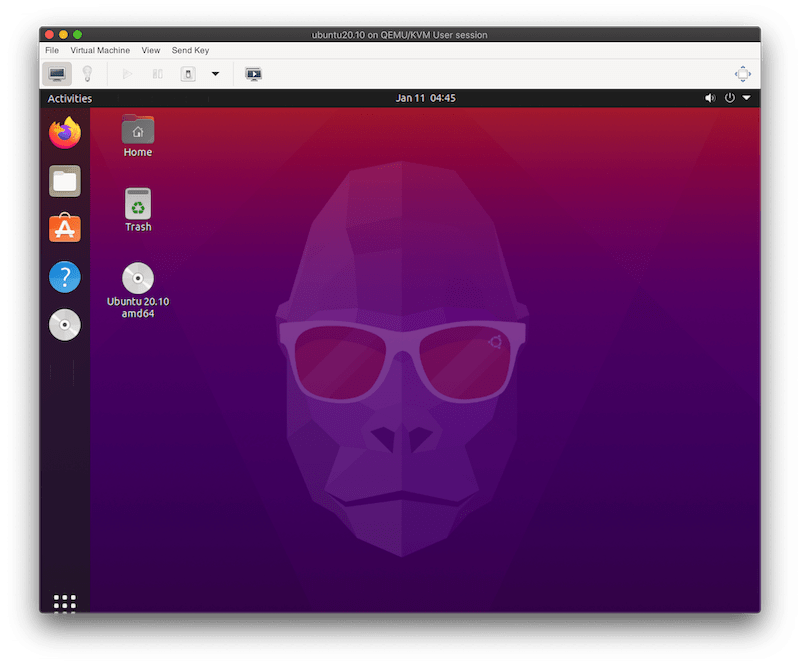
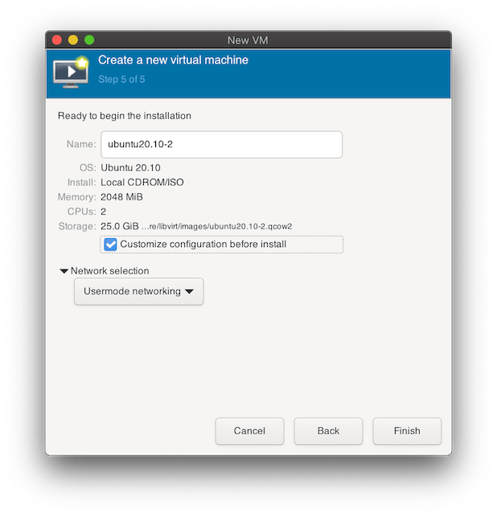
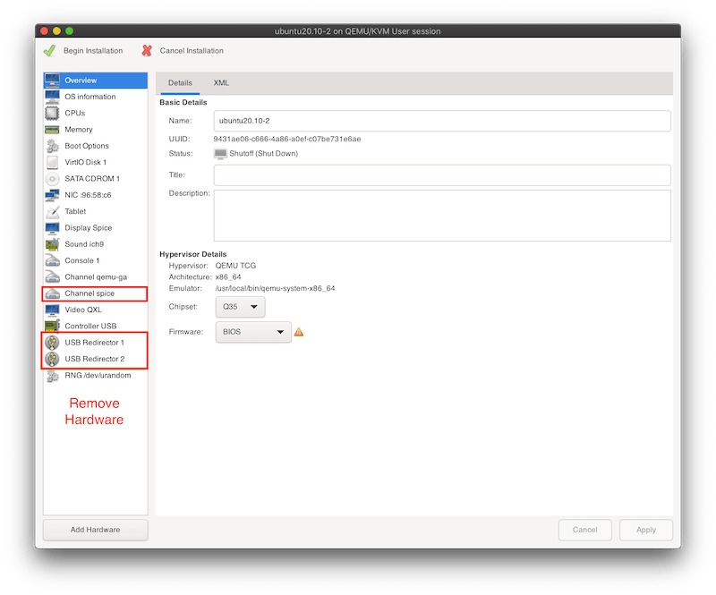
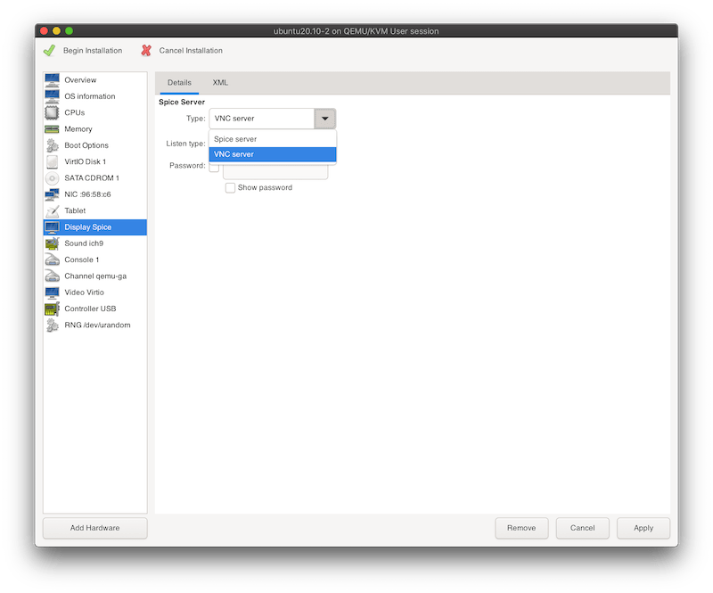
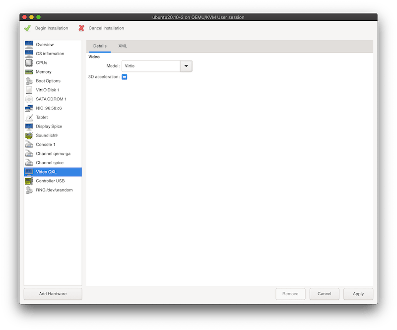

Running virt-manager and libvirt on macOS
I’ve previously written about using QEMU on macOS to create an Ubuntu VM via CLI. In this blog post I’m going to describe how to install libvirt and virt-manager on macOS to create an Ubuntu VM via QEMU from the virt-manager GUI.
What’s described in this blog post was more of an experiment to see if it would work. Running libvirt locally is very slow and not usable due to the missing support for the HVF Hypervisor.Framework.
If you’re only interested in running virt-manager on macOS (and connect to remote machines) you can skip the steps after the virt-manager installation.

Description
Libvirt uses a hypervisor (such as QEMU) to run a VM and provides an API to manage it. API Clients are available for many languages such as Python, Go or Rust.
Virt-manager is a Python application that provides a GUI to manage VMs though the libvirt API.
Installation
Libvirt is available in Homebrew and the installation can be done with a single command:
brew install libvirtVirt-manager is not available in Homebrew but there’s a custom formula available that makes it convenient to install it. However, this formula is outdated and fails to run on macOS Catalina and Big Sur.
To fix this I’ve created a fork with updated dependencies. It can be installed via a custom tap:
brew tap arthurk/homebrew-virt-manager
brew install virt-manager virt-viewerThe installation might take a few minutes due to many dependencies.
Usage
When the installation has finished we can test it by starting the libvirtd daemon:
brew services start libvirtand then virt-manager with a connection to it:
virt-manager -c "qemu:///session" --no-forkThe original Homebrew formula had a custom patch applied that made --no-fork the default behaviour (launching it in the foreground). To make it easier to maintain the formula I’ve removed the patch. If the process should run in the foreground the --no-fork argument needs to be specified or else it will run in the background.
Note that the virt-manager window will be hidden after starting. It will show up in the Dock (the icon is a rocket) and clicking on it will bring it into the foreground.
Creating a VM
As an example I’m creating a Ubuntu 20.10 VM.
Virt-manager assumes that SPICE is available and will add it to the default settings. However, it’s is not supported on macOS and therefore we need to change a the default values to remove all SPICE related settings:
Make sure to check the customize box before starting the VM:

In the customization window we need to remove all hardware related to SPICE (Right-Click -> Remove Hardware):
- Channel spice
- USB Redirector 1
- USB Redirector 2

In the Display section set the type to VNC server:

In the Video section set the model to Virtio:

Apply these changes and click on Begin Installation in the top left corner. It will open a window that boots into the Ubuntu installer. From there on we can follow the installer. The default settings are usually fine.
Conclusion
As mentioned above this was an experiment. The VM runs very slow due to the missing support for HVF (Hypervisor.Framework). The focus of libvirt is on KVM/Linux hosts. I wouldn’t use it on a daily basis on macOS and instead stick to the QEMU CLI with HVF set as the accelerator. You can check my previous blog post on how to do that.